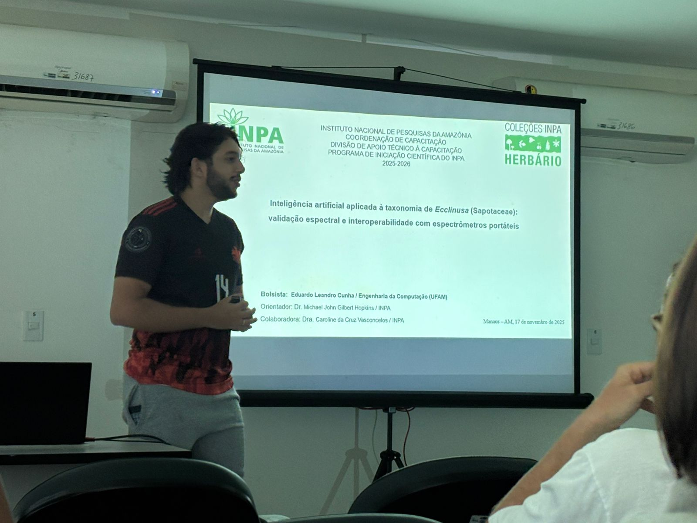
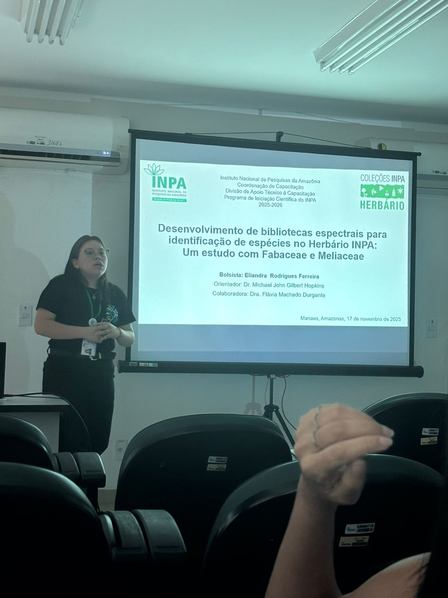

Conheça nossos alunos de Iniciação Científica (PIBIC/INPA 2025–2026)
Na semana do dia 17 de novembro, o INPA sediou a sessão de apresentações parciais do Programa de Iniciação Científica (PIBIC), com participação entusiasmada dos nossos bolsistas na área de Botânica.
Este post apresenta um pouco sobre quem são esses jovens pesquisadores e os projetos que estão desenvolvendo no Herbário INPA.
Eduardo Leandro Cunha

Instituição: Universidade Federal do Amazonas (UFAM)
Curso: Engenharia da Computação
Período: 6º
Lattes: http://lattes.cnpq.br/2142166621987119
Projeto desenvolvido no INPA: Inteligência artificial aplicada à taxonomia de Ecclinusa (Sapotaceae): validação espectral e interoperabilidade com espectrômetros portáteis
Orientador: Dr. Michael Hopkins
Co-orientadora: Dra. Caroline Vasconcelos
Colaboradoras: Dra. Flávia Durgante, Dra. Samyra Ramos e Maria Clara Ferro
O trabalho do Eduardo investiga como assinaturas espectrais de folhas (obtidas em exsicatas do Herbário INPA) podem ajudar a identificar espécies do gênero Ecclinusa, um grupo desafiador da família Sapotaceae. O foco do projeto é testar se espectrômetros portáteis, como o ISC NIR-S-G1 (micronir), conseguem reproduzir com boa acurácia os resultados de equipamentos de alta resolução, como o ASD FieldSpec 4. Com isso, o projeto contribui para tornar a espectroscopia mais acessível a herbários tropicais, fortalecer o uso da tecnologia no INPA e ampliar nossas bibliotecas espectrais.
Eliandra Rodrigues Ferreira

Instituição: Estácio do Amazonas
Curso: Bacharelado em Ciências Biológicas
Período: 6º
Lattes: https://lattes.cnpq.br/3358526069960413
Projeto desenvolvido no INPA: Desenvolvimento de bibliotecas espectrais para identificação de espécies no Herbário INPA: um estudo com Fabaceae e Meliaceae
Orientador: Dr. Michael Hopkins
Co-orientadora: Dra. Flávia Durgante
Colaboradoras: Dra. Caroline Vasconcelos, Dra. Samyra Ramos e Maria Clara Ferro
A pesquisa da Eliandra é voltada para duas famílias de grande importância ecológica e econômica (Fabaceae e Meliaceae), incluindo espécies listadas na CITES, como Dipteryx (popularmente conhecidas como cumaru) e Cedrela (cedro). Usando espectroscopia de reflectância em exsicatas, ela está construindo uma biblioteca espectral robusta que permitirá identificar rapidamente espécies ameaçadas e apoiar a fiscalização e a curadoria taxonômica do herbário.
Yasmin Jéssica Guimarães Guedes

Instituição: Universidade Federal do Amazonas (UFAM)
Curso: Licenciatura em Biologia
Período: 6° período
Lattes: https://lattes.cnpq.br/7129000327997949
Projeto desenvolvido no INPA: Construção de biblioteca espectral aplicada à identificação de Bignoniaceae no Herbário INPA
Orientador: Dr. Michael Hopkins
Co-orientadora: Dra. Flávia Durgante
Colaboradoras: Dra. Caroline Vasconcelos, Dra. Samyra Ramos e Maria Clara Ferro
A Yasmin trabalha com Bignoniaceae, uma família emblemática da flora sul-americana e que também inclui espécies sob proteção da CITES. Seu objetivo é desenvolver uma biblioteca espectral capaz de diferenciar espécies de Handroanthus e Tabebuia, grupos com alto valor madeireiro e frequente confusão taxonômica. O projeto reforça o papel dos herbários na identificação de espécies ameaçadas e abre portas para o uso de espectroscopia como ferramenta de monitoramento ambiental.
Por fim, é um privilégio acompanhar a formação desses novos pesquisadores e ver como tecnologias emergentes — como espectroscopia de reflectância, aprendizado de máquina e bibliotecas digitais — estão transformando a forma como investigamos, curamos e compreendemos a biodiversidade amazônica.
Parabéns aos alunos pelas apresentações e pelo comprometimento com a ciência produzida na Amazônia! 👏
Caroline C. Vasconcelos
Bolsista de Apoio Técnico
Meus interesses de pesquisa incluem taxonomia e sistemática (especialmente Sapotaceae neotropical), espectroscopia como ferramenta integrativa, flora amazônica, modelagem de distribuição de espécies, estudos florísticos, e ecologia de florestas tropicais.